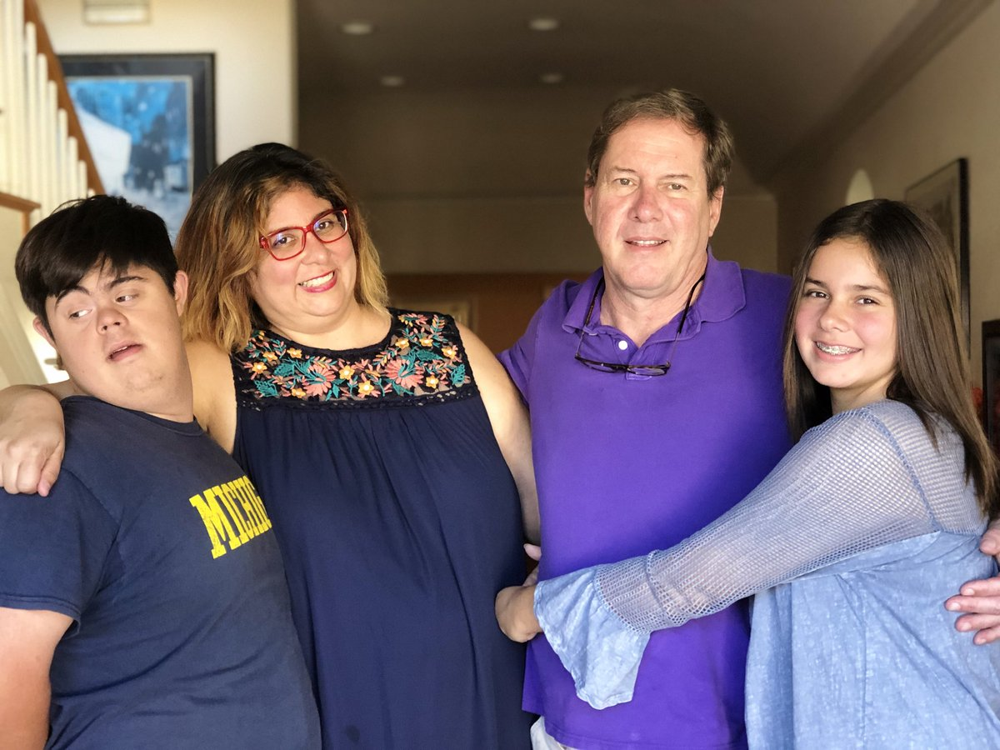

My Family
My dad is 57 and he is serious most of the time. He is very kind though. He is thoughtful towards others and always thinks of other before himself. My mom is also the same but is has a very bright personality. She wears the brightest clothing, with flower headbands, and loves the color RED! She is the most creative person I know. She would make her frames for photos out of ribbons, buttons, and feathers. She would always sing songs but don’t know the lyrics. And has the most kind heart in this whole world. My brother is the sweetest little boy ever. He is 16 and he has down-syndrome. He is super smart and can breakdance very well. He knows hip-hop and knows jiu jitsu. He is so kind and doesn't let anything stop him. I love my sister! She is the most ambitious, loveable, crazy, creative, silly person I’ll ever know. We are basically best friends more than sisters. We both share the same dream of traveling the world and trying different food. She is a musician and singer that plays everywhere. She has traveled all over the U.S. and she is currently in Israel right now with her boyfriend. She is a very talented person and is super pretty. I look up to my sister all the time.